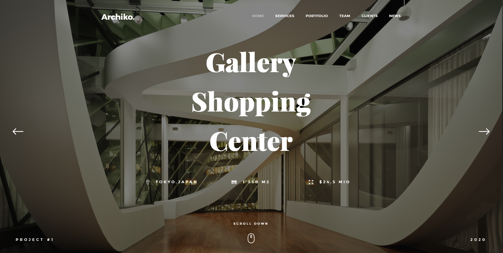
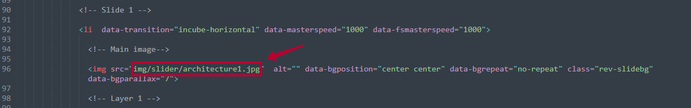
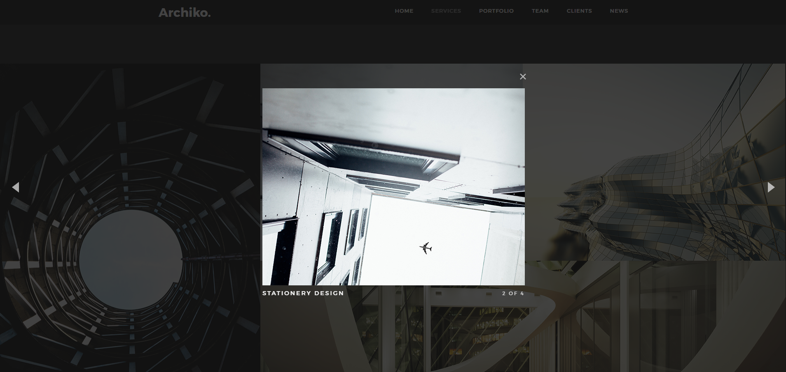
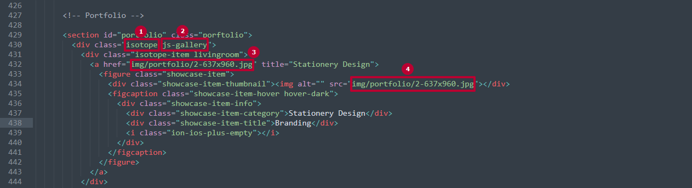
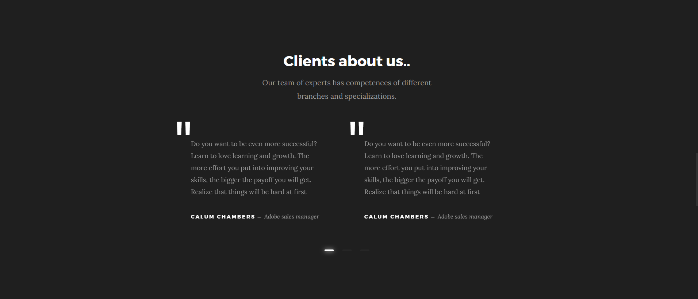
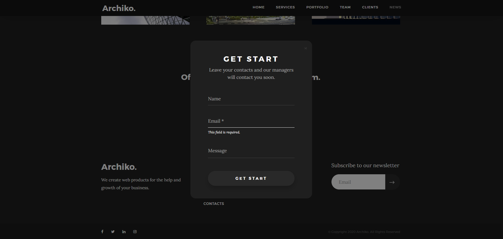
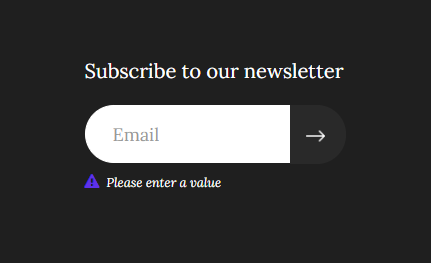

Design to attract, convert and
delight your customers
The structure of the ARQUITO HTML template:
All Revolution sliders are built with plugin Revolution jQuery Slider, you can find documentation here

The main image of the each slide is in the folder img

Also full documentation you can find here
Portfolio grid built with plugin isotope.js. It is needed to sort images by grid
Gallery built with plugin magnific popup. It is needed to open image in gallery

1. This is isotope init class, initialization you can find in file interface.js
2. This is magnific popup init class, initial you can find in file interface.js
3. Here you can put your image that will open when you click
4. This imageу is shown by default on the site

Clients carousel works with Owl carousel plugin. It's easy to customize, see documentation

Modal built with plugin magnific popup. It is needed to open modal popup when we click on button "Let's talk".
Form submission is implemented using ajax method using a plugin jquery validation. Initialization of ajax you can find in interface.js folder
Subscribe form build with pluginjquery.ajaxchimp.min. Initialization you can find in interface.js folder
